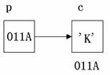
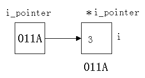

指针是Ｃ语言中广泛使用的一种数据类型。运用指针编程是Ｃ语言最主要的风格之一。利用指针变量可以表示各种数据结构；能很方便地使用数组和字符串；并能象汇编语言一样处理内存地址，从而编出精练而高效的程序。指针极大地丰富了Ｃ语言的功能。学习指针是学习Ｃ语言中最重要的一环，能否正确理解和使用指针是我们是否掌握Ｃ语言的一个标志。同时，指针也是Ｃ语言中最为困难的一部分，在学习中除了要正确理解基本概念，还必须要多编程，上机调试。只要作到这些，指针也是不难掌握的。
在计算机中，所有的数据都是存放在存储器中的。一般把存储器中的一个字节称为一个内存单元，不同的数据类型所占用的内存单元数不等，如整型量占2个单元，字符量占1个单元等，在前面已有详细的介绍。为了正确地访问这些内存单元，必须为每个内存单元编上号。根据一个内存单元的编号即可准确地找到该内存单元。内存单元的编号也叫做地址。既然根据内存单元的编号或地址就可以找到所需的内存单元，所以通常也把这个地址称为指针。 内存单元的指针和内存单元的内容是两个不同的概念。 可以用一个通俗的例子来说明它们之间的关系。我们到银行去存取款时，银行工作人员将根据我们的帐号去找我们的存款单， 找到之后在存单上写入存款、取款的金额。在这里，帐号就是存单的指针， 存款数是存单的内容。对于一个内存单元来说，单元的地址即为指针，其中存放的数据才是该单元的内容。在Ｃ语言中，允许用一个变量来存放指针，这种变量称为指针变量。因此，一个指针变量的值就是某个内存单元的地址或称为某内存单元的指针。

图中，设有字符变量C，其内容为“K”(ASCII码为十进制数 75)，C占用了011A号单元(地址用十六进数表示)。设有指针变量P，内容为011A，这种情况我们称为P指向变量C，或说P是指向变量C的指针。
严格地说，一个指针是一个地址，是一个常量。而一个指针变量却可以被赋予不同的指针值，是变量。但常把指针变量简称为指针。为了避免混淆，我们中约定：“指针”是指地址，是常量，“指针变量”是指取值为地址的变量。定义指针的目的是为了通过指针去访问内存单元。
既然指针变量的值是一个地址，那么这个地址不仅可以是变量的地址，也可以是其它数据结构的地址。在一个指针变量中存放一个数组或一个函数的首地址有何意义呢？因为数组或函数都是连续存放的。通过访问指针变量取得了数组或函数的首地址，也就找到了该数组或函数。这样一来，凡是出现数组，函数的地方都可以用一个指针变量来表示，只要该指针变量中赋予数组或函数的首地址即可。这样做，将会使程序的概念十分清楚，程序本身也精练，高效。在Ｃ语言中，一种数据类型或数据结构往往都占有一组连续的内存单元。用“地址”这个概念并不能很好地描述一种数据类型或数据结构，而“指针”虽然实际上也是一个地址，但它却是一个数据结构的首地址，它是“指向”一个数据结构的，因而概念更为清楚，表示更为明确。 这也是引入“指针”概念的一个重要原因。
变量的指针就是变量的地址。存放变量地址的变量是指针变量。即在Ｃ语言中，允许用一个变量来存放指针，这种变量称为指针变量。因此，一个指针变量的值就是某个变量的地址或称为某变量的指针。
为了表示指针变量和它所指向的变量之间的关系，在程序中用“*”符号表示“指向”，例如，i_pointer代表指针变量，而*i_pointer是i_pointer所指向的变量。

因此，下面两个语句作用相同：
i=3; *i_pointer=3;
第二个语句的含义是将3赋给指针变量i_pointer所指向的变量。
对指针变量的定义包括三个内容：
(1) 指针类型说明，即定义变量为一个指针变量；
(2) 指针变量名；
(3) 变量值(指针)所指向的变量的数据类型。
其一般形式为：
类型说明符 *变量名；
其中，*表示这是一个指针变量，变量名即为定义的指针变量名，类型说明符表示本指针变量所指向的变量的数据类型。
例如：
int *p1;
表示p1是一个指针变量，它的值是某个整型变量的地址。或者说p1指向一个整型变量。至于p1究竟指向哪一个整型变量，应由向p1赋予的地址来决定。
再如：
int *p2; /*p2是指向整型变量的指针变量*/ float *p3; /*p3是指向浮点变量的指针变量*/ char *p4; /*p4是指向字符变量的指针变量*/
应该注意的是，一个指针变量只能指向同类型的变量，如P3 只能指向浮点变量，不能时而指向一个浮点变量，时而又指向一个字符变量。